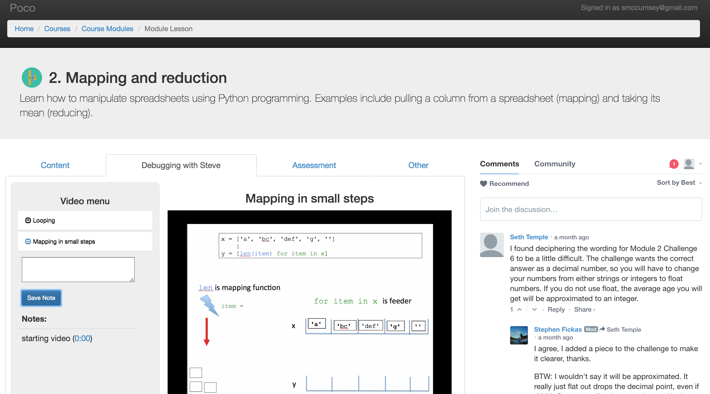

I built this website for Professor Steve Fickas' course, Intro to Data Science (University of Oregon). The site provides course content and a means of accepting and providing feedback for student code submissions. The website is currently supporting 17 student users (for Fall 2016 term). This is expected to grow to 40 students for the Winter 2017 term. Poco is hosted on PythonAnywhere
| Access to users is granted via Google Authentication. | |
| Course access to specific users is specified by the Administrator. If a user is not allowed access to a course they are restricted from using the site. | |
| Each course is composed of a set of modules (like chapters in a book). The button changes from "Start this Module" to "Continue this Module" when the user first clicks on a module button. | The "Content" tab of a module is an inactive Jupyter Notebook. A Disqus board on the right that's unique to each module allows students to discuss and the moderator receives an email alert whenever a comment is posted. |
|  | The "Debugging with Steve" tab of a module features a menu of videos. When a user clicks on a video from the menu there is a dropdown that displays any notes they've recorded while watching the video. |
| The "Assessment" tab features a series of challenges that each have a description, a text editor for students to enter code for the particular challenge, as well as a section that displays feedback on whether or not the student successfully completed the challenge. | |
| The "Assessment" tab features a series of challenges that each have a description, a text editor for students to enter code for the particular challenge, as well as a section that displays feedback on whether or not the student successfully completed the challenge. | |
| The "Other" tab provides a place for the instructor to include any extra content. |